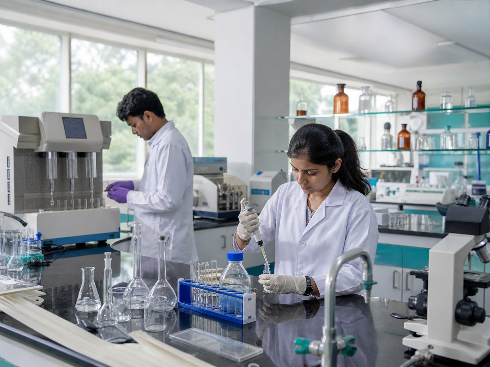
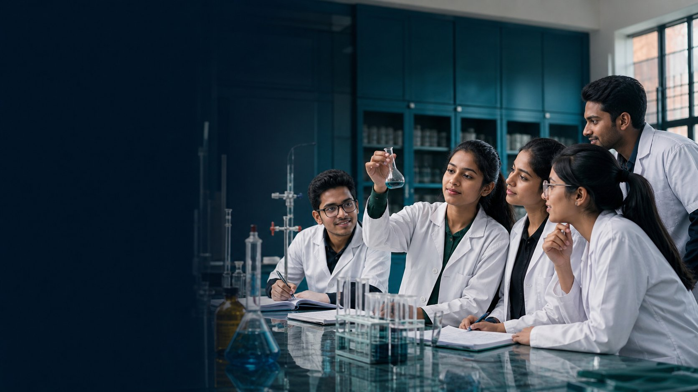

Spaces built for exploration
Purpose-planned pharmaceutical laboratories help students move from principle to practice with care and confidence.
Explore facilities →Build a future in medicines, research and patient care through rigorous learning, modern laboratories and purpose-led mentorship.
At Netaji, pharmaceutical education is designed around careful science, ethical decisions and the people every medicine ultimately serves.
Strong foundations across pharmaceutical disciplines.
Structured laboratory and field-based experiences.
Exposure to diverse roles across the medicines ecosystem.
Professional practice grounded in patient wellbeing.

A four-year, eight-semester undergraduate journey connecting pharmaceutical science, clinical insight and hands-on practice.
Explore drug discovery and development, formulation, analysis, pharmacology, natural products and pharmacy practice—then connect that knowledge through guided practical work.
Discover the programme →A focused environment for curious learners who want to understand medicines deeply and use that knowledge responsibly.
Purpose-planned pharmaceutical laboratories help students move from principle to practice with care and confidence.
Explore facilities →Faculty guidance supports questions, practical work and professional direction.
Admissions, updates, support and records come together in a secure student dashboard.
Review programme, eligibility, fees and required documents.
Create your account and complete the guided admission form.
Follow document checks and respond to correction requests.
Complete fee verification and download your admission letter.
Our demonstration campus story centres active learning: formulating, testing, analysing and understanding how quality decisions affect real lives.
See life at Netaji →
Review eligibility, the document checklist and key dates before the cycle is opened.
Read more →Explore the four-year learning journey, practical experience and career pathways.
Read more →Create and track support tickets from one secure place.
Read more →Create your account, complete one guided application and follow every update.